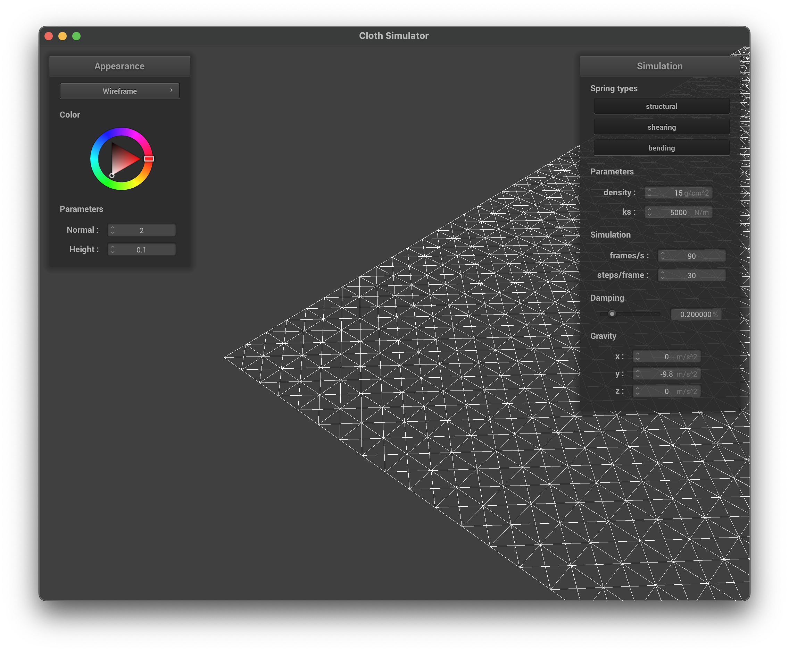
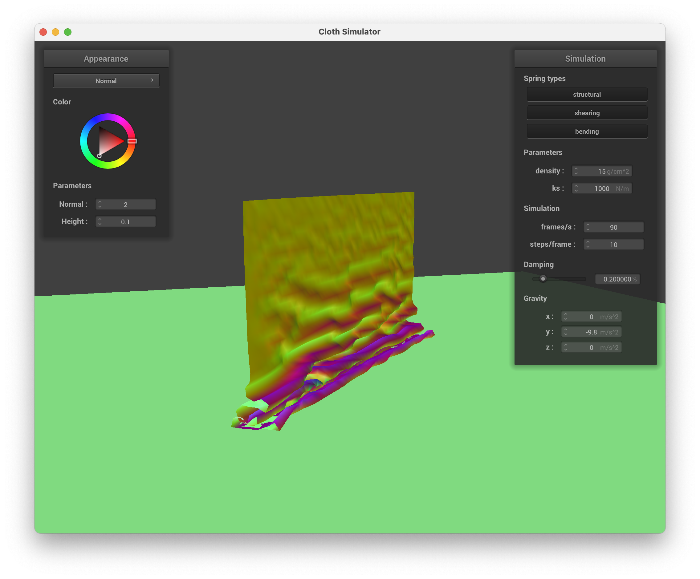
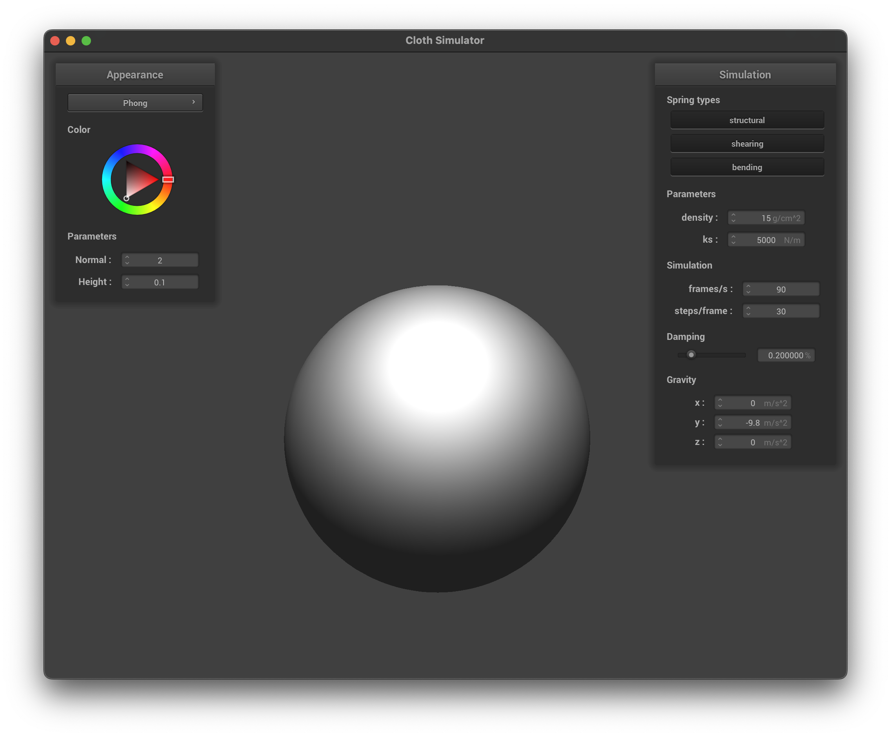

CS184/284A Spring 2025 Homework 4 Write-Up
Link to webpage: https://cal-cs184-student.github.io/hw-webpages-cappu/hw4/index.html
Link to GitHub repository: https://github.com/cal-cs184-student/sp25-hw4-for-the-blood-god

Overview
In homework 4, we implemented a cloth simulation system that simulates the behavior of a cloth object. We used the mass-spring system to model the cloth and used numerical integration to simulate the cloth's motion, experiemented with kinetic properties of the cloth system. We also implemented collision handling and self-collision handling to improve the realism of the simulation. Moreover, in part 5 with GLSL, we implemented 5 different shaders to improve the visual appearance of the cloth simulation.Part 1: Masses and springs
In this part, we implemented the basic cloth mass-spring system with structural springs, shearing springs, and bending springs.
Rendering Results
|
|
|

|
|
|
Part 2: Simulation via numerical integration
In this part, we implemented the numerical integration of the cloth simulation. Following graphs would show the variance of the simulation results with different properties.
ks Comparison
|
|
|
|
|
|
From the above graphs, we can see that the larger the ks is, the stiffer the cloth is. When ks is too large, the cloth will look very stiff and not natural. In addition, ks would control the deformation of the cloth. If you observe the upper curve between the two pinnes points of the clothlm, it is very obvious that the curvature is becoming less as the ks increases.
Density Comparison
|
|
|

|
|
|
|

|
From the above graphs, we can see that the denser the cloth is, the heavier the cloth looks. It is the same as you observe the upper curve between the two pinnes points of the cloth. High density would add curvature. But when it comes to stiffness, it does not have a obvious change as ks
Damping Comparison
The following gif shows the comparison of the damping parameter. Please view them on the website to see the full effect.
|
|

|

|
The damping parameter plays an essential role in cloth simulation based on numerical integration. It simulates energy loss during cloth movement, including air resistance and internal friction within the material. Without damping (damping = 0.0), the cloth continuously oscillates and never reaches a stable state, similar to how an ideal spring would never stop vibrating. With an appropriate damping value (such as the default 0.59), the cloth gradually slows down during movement and eventually reaches equilibrium, producing realistic motion. Excessive damping (damping = 1.0) causes the cloth to move very slowly, as if moving through liquid, which reduces realism. By adjusting the damping parameter, we can simulate different fabric properties ranging from something like silk (low damping) or to heavy cotton (high damping), significantly improving the realism and variety of the simulation.
Shaded Results
|
|
|
|
|
|
Part 3: Handling collisions with other objects
In this part, we implemented collision handling for both spheres and planes. The implementation involves detecting collisions and applying appropriate corrections to prevent the cloth from penetrating through objects.
Sphere Collision
For sphere collisions, we implemented the following steps:
- Calculate the distance vector between the point mass and the sphere's origin
- Compute the actual distance using the norm of the distance vector
- If the distance is less than the sphere's radius, a collision has occurred
- Calculate the correction by:
- Finding the tangent point on the sphere's surface
- Applying a correction vector that accounts for friction
- Moving the point mass to its corrected position
Plane Collision
For plane collisions, we implemented the following steps:
- Calculate the distance vector between the point mass and a point on the plane
- Compute the signed distance using the dot product with the plane's normal
- If the distance is negative, a collision has occurred
- Calculate the correction by:
- Finding the tangent position on the plane's surface
- Applying a correction vector that accounts for friction
- Moving the point mass to its corrected position
In both cases, we use the friction parameter to control how much the point mass slides along the surface after collision. A higher friction value results in less sliding, while a lower value allows for more movement along the surface.
Results of sphere collision
|
|
|
w |
From the above results, we can see that the smaller the ks is, the more the cloth would fit the sphere. When ks is too large, the cloth would look very stiff and even going to slip off the sphere.
Shaded Plane Collision
|
|
|
|
Part 4: Handling self-collisions
In this part, we implemented self-collision handling for the cloth simulation. The implementation uses a spatial hashing technique to efficiently detect and resolve collisions between different parts of the cloth.
Detailed Function Implementation
1. hash_position(Vector3D pos)
This function converts a 3D position into a unique hash value that represents its spatial box membership:
- Calculates box dimensions based on cloth properties:
- Width of box (w) = 3.0 * cloth_width / num_width_points
- Height of box (h) = 3.0 * cloth_height / num_height_points
- Depth of box (t) = max(w, h)
- Computes box indices by dividing position coordinates by box dimensions
- Uses prime number multiplication and XOR operations to create a unique hash:
- 73856093 for x-coordinate
- 19349663 for y-coordinate
- 83492791 for z-coordinate
2. build_spatial_map()
This function constructs and maintains the spatial hash map:
- Cleans up previous map by:
- Deleting all vector pointers in the map
- Clearing the map container
- Rebuilds the map by:
- Iterating through all point masses
- Computing hash value for each point's position
- Creating new vector if hash bucket doesn't exist
- Adding point mass pointer to appropriate hash bucket
3. self_collide(PointMass &pm, double simulation_steps)
This function handles collision detection and resolution for a single point mass:
- Collision Detection:
- Computes hash value for the point mass's position
- Retrieves list of potential colliding points from spatial map
- Skips if no other points in the same spatial box
- Collision Resolution:
- Initializes correction vector and collision count
- For each potential colliding point:
- Skips self-comparison
- Computes distance between points
- If distance < 2 * thickness and > 1e-7:
- Calculates correction amount (2 * thickness - distance)
- Normalizes direction vector
- Adds correction to total correction vector
- Increments collision count
- Final Correction:
- If collisions occurred:
- Averages correction vector by collision count
- Scales correction by simulation steps for stability
- Applies final correction to point mass position
- If collisions occurred:
Rendered Process of self-collision
The following pictures are the rendered under 10 steps per frame.

|
|
|
|
|
|
|
Parameter Comparison
ks compare
|
|

|
|
|
|
|
|
|
|
|
|
In self-collision simulation, the ks value significantly affects cloth behavior. With low ks (1000), the cloth is softer and more easily deformable, resulting in more wrinkles and a natural draping effect. As ks increases to a moderate value (5000), the cloth becomes more elastic, reducing extreme deformations while maintaining an appropriate level of wrinkling. At high ks values (10000), the cloth becomes noticeably stiffer, less prone to deformation, with fewer wrinkles and a flatter overall appearance.
density compare
|
|
|
|
|
|
|
|

|
|
|
Low-density (10) cloth is very lightweight, falls more quickly, and forms fewer and shallower wrinkles during self-collision. Medium-density (50) cloth exhibits more realistic draping characteristics, producing an appropriate amount of natural wrinkling. High-density (100) cloth is notably heavier, has greater momentum during falling, and forms more numerous and deeper wrinkles, with more significant deformation after landing.
Part 5: Shaders
In this part, we implemented various shader programs to enhance the visual appearance of our cloth simulation. Shaders are specialized programs that run on the GPU to control how objects are rendered.
Shader Program Overview
A shader program consists of two main components: vertex shader and fragment shader. The vertex shader processes individual vertices of 3D models, transforming their positions from model space to screen space. It calculates and passes vertex attributes such as normals and texture coordinates to the fragment shader, and can perform operations like model-view-projection transformations.
The fragment shader processes individual pixels (fragments) of the rendered image, determining the final color of each pixel. It implements lighting calculations and material effects, and can perform texture mapping and other visual effects. Together, these two shaders work in harmony to create the final rendered image.
Shader Pipeline
The rendering process follows a specific pipeline. In the vertex processing stage, the vertex shader receives vertex data including position and normal information. It transforms these vertices through model, view, and projection matrices, and can calculate lighting at the vertex level. The transformed data is then passed to the fragment shader.
During rasterization, the GPU converts the transformed vertices into fragments (pixels). This process interpolates vertex attributes across the surface and determines which fragments are visible. The rasterization stage bridges the gap between vertex processing and fragment processing.
In the fragment processing stage, the fragment shader receives the interpolated vertex data. It calculates the final color based on lighting and material properties, applies textures and other visual effects, and outputs the final pixel color to the framebuffer. This stage is crucial for achieving high-quality visual effects.
Lighting and Material Effects
Shaders work together to create realistic lighting and material effects. In terms of lighting calculations, the vertex shader can calculate lighting at vertices, while the fragment shader can calculate per-pixel lighting for better quality. The shader system supports different light types including directional, point, and spot lights, and implements various lighting models such as Phong and Blinn-Phong.
For material properties, shaders handle diffuse color and texture mapping, specular highlights and shininess, normal mapping for surface detail, and environment mapping for reflections. These effects combine to create realistic-looking materials that respond appropriately to lighting conditions.
The Blinn-Phong Shading Model with Rendered Results
The Blinn-Phong shading model is a widely used illumination model in computer graphics that calculates the intensity of light at each point on a surface. It consists of three main components:
|
|
1. Ambient Light: This represents the background light that illuminates all surfaces equally, regardless of their orientation. It simulates light that has been scattered so much that its direction is completely random. The ambient term is calculated as:
\[ L_a = k_a I_a \]
where \(k_a\) is the ambient reflection coefficient and \(I_a\) is the ambient light intensity.
|
|
2. Diffuse Reflection: This models the way light reflects off rough surfaces, scattering equally in all directions. The intensity depends on the angle between the surface normal and the light direction. The diffuse term is:
\[ L_d = k_d (I/r^2) \max(0, \mathbf{n} \cdot \mathbf{l}) \]
where \(k_d\) is the diffuse reflection coefficient, \(I\) is the light intensity, \(r\) is the distance to the light source, \(\mathbf{n}\) is the surface normal, and \(\mathbf{l}\) is the light direction vector.
|
|
3. Specular Reflection: This represents the bright highlights that appear on shiny surfaces. Instead of using the reflection vector like in the Phong model, Blinn-Phong uses the halfway vector between the view direction and light direction, which is more efficient to compute. The specular term is:
\[ L_s = k_s (I/r^2) \max(0, \mathbf{n} \cdot \mathbf{h})^p \]
where \(k_s\) is the specular reflection coefficient, \(\mathbf{h}\) is the halfway vector, and \(p\) is the shininess exponent that controls the size of the highlight.
|

|
The final Blinn-Phong lighting equation combines all three components:
\[ L = k_a I_a + k_d (I/r^2) \max(0, \mathbf{n} \cdot \mathbf{l}) + k_s (I/r^2) \max(0, \mathbf{n} \cdot \mathbf{h})^p \]
Customed texture rendered results
|
|
|
|
|
Bump shader vs. Displacement shader
|
|
|
|
|
|
The comparative renders demonstrate these differences clearly. With the bump shader, we see convincing surface detail in the central portions of the cloth, but the silhouettes remain smooth. The displacement shader, however, shows actual geometric variation at the edges. Under collision conditions, the displacement mapping creates physically accurate deformation patterns as the cloth interacts with other objects, while bump mapping only affects the lighting of these interactions.
The following comparison images show that the sphere resolution would also affect the advantage of displacement shader. In low resolution sphere (-o 16 -a 16), there are no obvious difference between the two methods. In the high resolution one, the variation on the edges become much noticeable.
|
|
|
|
|
|
Mirror shader rendered results
|
|
|
Customed Shader for Extra Credit
For our custom shader implementation, we created a water surface shader that combines several advanced rendering techniques to achieve a visually appealing water effect. This shader system consists of both vertex and fragment components working in harmony to create a convincing illusion of flowing water. Although without time factor it is completely still, we have glimpsed some techniques used to create realistic water, including FBM, normal mapping, fresnel effect and refraction.
Vertex Shader: Dynamic Wave Generation
The vertex shader employs Fractal Brownian Motion (FBM) to generate natural-looking wave patterns. By layering multiple noise functions at different frequencies and amplitudes, we create complex, non-repetitive wave surfaces that appear organic rather than mathematically perfect. The implementation includes:
- A pseudo-random noise function and 2D value noise as the foundation
- Fractal Brownian Motion that combines six octaves of noise at different scales
- Multiple overlapping wave patterns with varying frequencies and directions
- Concentric circular ripples that add additional movement variety
- Dynamic normal recalculation using numerical derivatives to enhance lighting effects
Fragment Shader: Realistic Water Rendering
The fragment shader implements sophisticated lighting and texture effects to render convincing water surfaces. Key features include:
- Normal mapping with blended samples to create detailed surface distortion
- Fresnel effect calculation that increases reflectivity at grazing angles
- Environment mapping using a cubemap texture for realistic reflections
- Water depth simulation based on viewing angle and surface orientation
- Refraction distortion for underwater textures
- Specular highlights that respond to wave patterns and viewing angle
- Parameterized controls for water darkness, reflection intensity, and visibility
|
|
|
|
There are some limitations of our custom shader. For example, the water is completely still, and the effect is not super convincing. (looks like something 10 years ago) Perhaps adding other effects like bubbles would make it much more realistic, less like a flat glue.